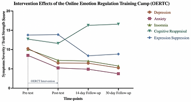
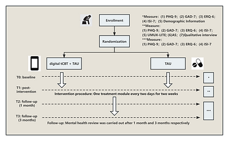

Training for Emotional Adaptation (TEA)


Project leaders
Yuhao He
Overview
Our project focuses on the development of a digital mental health online platform called "Redbud Mental Wellness" in collaboration with Tsinghua University Vanke School of Public Health and Health, Tsinghua University School of Fine Arts, and Tsinghua University Yuquan Hospital. We have created a digital transdiagnostic intervention program, Training for Emotional Adaptation (TEA), based on the emotional regulation model and Internet-delivered cognitive behavioral therapy.
Through a single-arm pilot trial, we have observed positive outcomes in addressing depression, anxiety, insomnia, and emotional regulation. Currently, we are expanding the intervention content to incorporate interoceptive and mindfulness training, aiming to provide comprehensive, personalized mental health services.
To further validate our approach, we are preparing for a randomized controlled trial to verify the real-world efficacy of our intervention. Our ultimate goal is to contribute to the field of digital mental health intervention by leveraging technology and evidence-based strategies, improving accessibility, and enhancing overall well-being for individuals in need.
Further reading
Qu, D., Liu, D., Cai, C., Yu, J., Zhang, Q., Liu, K., ... & Chen, R. (2022). Process Model of Emotion Regulation-Based Digital Intervention for Emotional Problems: A mixed methods feasibility study. medRxiv, 2022-11.